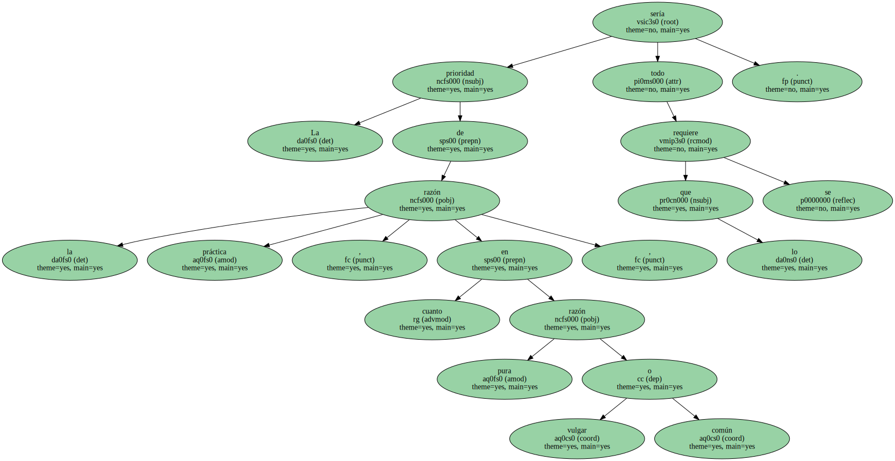
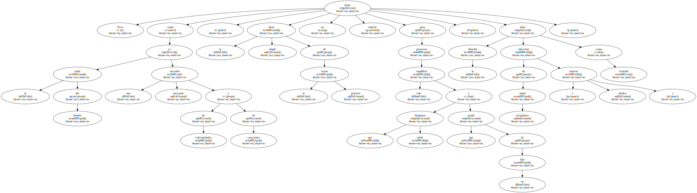
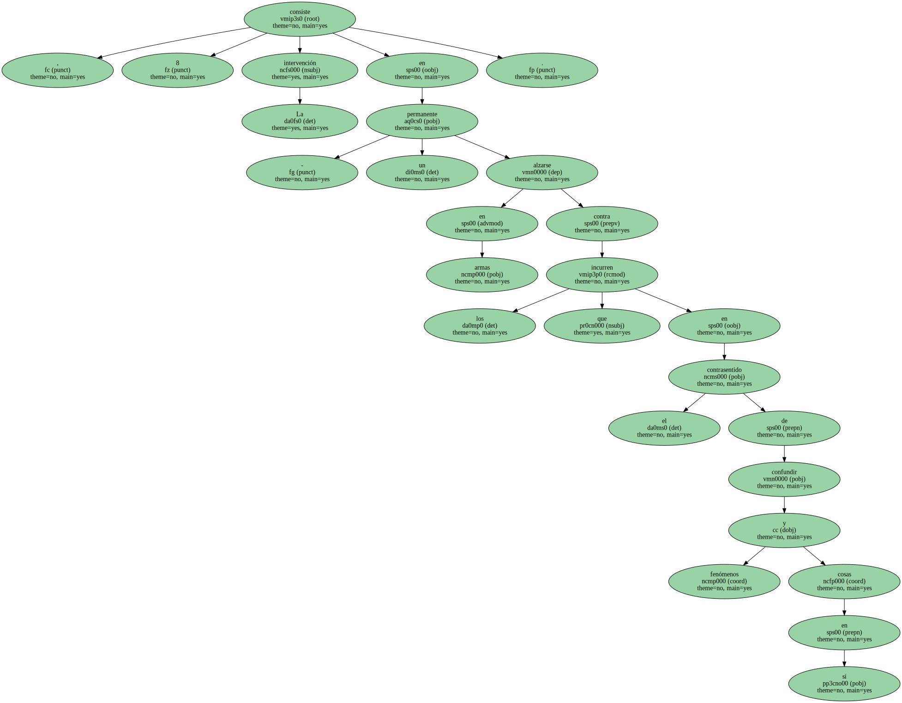
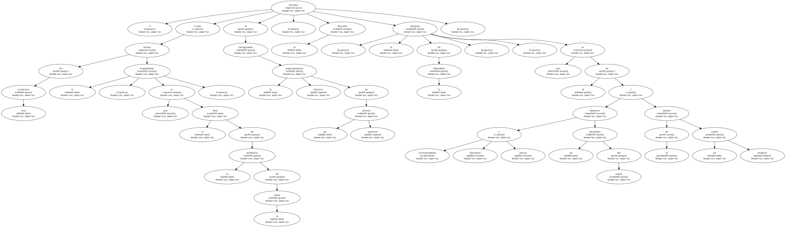
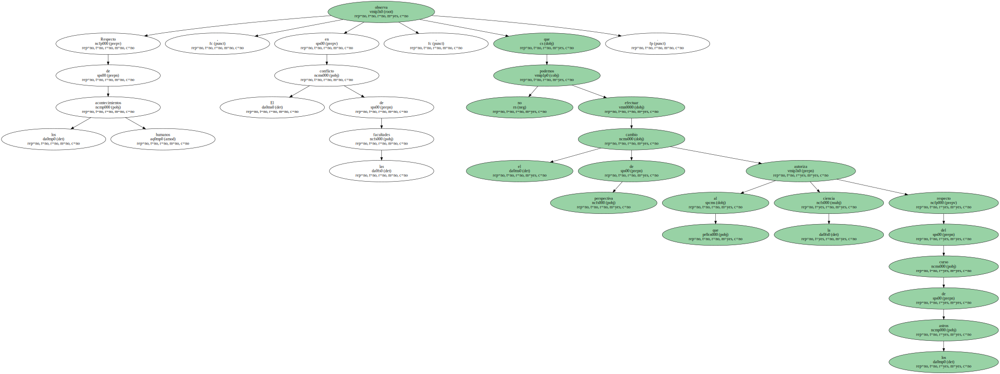
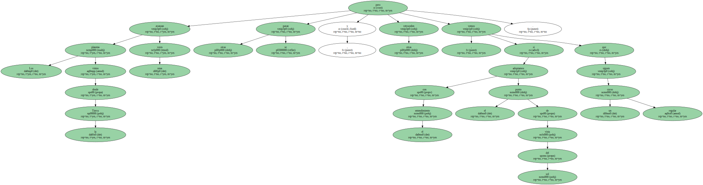
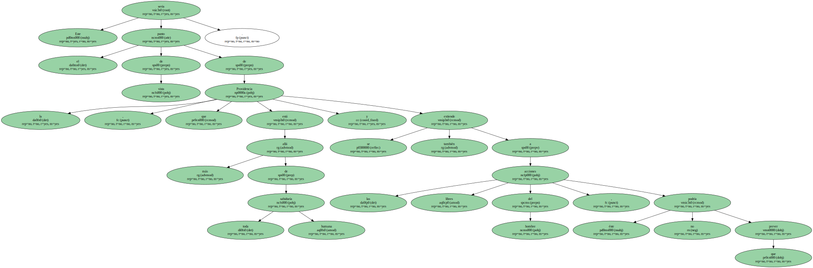
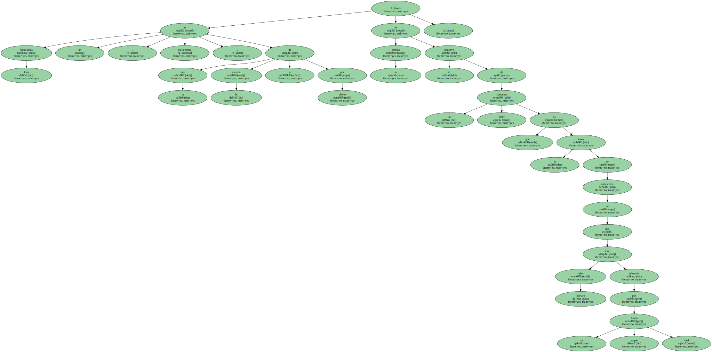
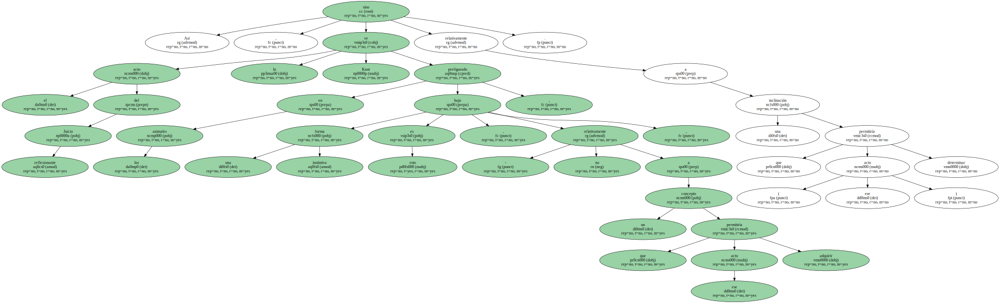

La prioridad de la razón práctica , en cuanto razón pura vulgar o común , sería todo lo que se requiere.
Pero como la salud del hombre es una sucesión incesante de enfermedades y de curaciones , la simple dieta de la razón práctica no basta todavía para preservar este equilibrio que llamamos salud y que pende de un hilo : la filosofía debe intervenir de modo terapéutico como remedio ( materia médica ).
, 8 La intervención consiste en - un permanente alzarse en armas contra los que incurren en el contrasentido de confundir fenómenos y cosas en sí.
9 Como de esta confusión resulta el dogmatismo , que es el final de la animación de la razón , al salvaguardar la preponderancia decisiva de las razones prácticas , la filosofía favorece - el designio de la Naturaleza - , que es el de mantener constantemente despiertas y activas las facultades del sujeto y apartar de él un sueño letárgico.
Lo fundamental será comprender lo que quería decir para Kant que la autonomía , que es - el fundamento de la dignidad del ser racional , la tenemos los hombres en cuanto seres nouménicos , o lo que es lo mismo , que tenemos capacidad autolegisladora en cuanto impenetrables al autoconocimiento.

Respecto de los acontecimientos humanos observa , en El conflicto de las facultades , que no podemos efectuar el cambio de perspectiva al que la ciencia autoriza respecto del curso de los astros.
Los planetas vistos desde la Tierra unas veces avanzan , otras se paran y otras retroceden , pero si adoptamos con el entendimiento el punto de vista del sol vemos que siguen un curso regular.
Pues bien , - la desgracia es precisamente que no podemos colocarnos en ese punto de vista cuando se trata de prever acciones libres -.

Este sería el punto de vista de la Providencia , que está más allá de toda sabiduría humana y se extiende también a las acciones libres del hombre , que éste no podría prever.
Por eso , porque la misma actividad legisladora del entendimiento que da a lo diverso de la experiencia su orden y regularidad resulta del poder de la libertad , que es el de iniciar series de fenómenos , como dice la tesis de la tercera antinomia , no hay ningún producto racional que pueda sobreponerse a la libertad.

Esta Naturaleza no es , ciertamente , la que la ciencia se da por objeto , su sentido es el negativo de un concepto límite que es la toma de conciencia de que nuestro saber está rebasado por su propio fondo vital.
Así , el acto del Juicio reflexionante lo ve Kant prefigurado en los animales bajo una forma instintiva , esto es , - no relativamente a un concepto que ese acto permitiría adquirir , sino relativamente a una inclinación que ( ese acto ) permitiría determinar.
